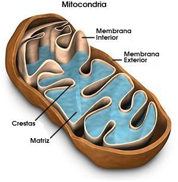

Las mitocondrias son organelos celulares en los cuales ocurre un proceso indispensable para las células eucariontes: la respiración celular.
Durante este proceso ocurre la combustión de los carbohidratos, que permite liberar la energía contenida en su estructura.
Los carbohidratos que se utilizan en las mitocondrias provienen principalmente de la fotosíntesis(en las plantas y algunos otros organismos que fotosintetizan) o de la ingestión(en las formas de vida heterótrofas).